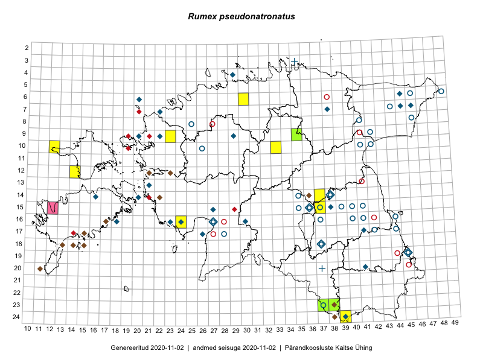

Rumex pseudonatronatus — soome oblikas
Polygonaceae :: Rumex pseudonatronatus Borbás (89); Rumex fennicus (Murb.) Murb. (8)

Kaart põhineb 115 kirjel:
vaatlusi 33
herbaareksemplare 64
PKÜ kirjeid1 14
ELFi kirjeid2 4
Taime kaasaegsed ja ajaloolised leiukohad asuvad 74 ruudus.
Tingmärgid ja ruutude arvud periooditi (U3 / V4 )
█ 2006–2020 (16/–)
◆/◇ 1971–2005 (36/37)
○ 1921–1970 (29/30)
+ kuni 1920 (2/2)
× hävinud (–/0)
? kaheldav (–/0)
| Ruut | Leidja(d) | Leiuaeg | Kirje |
|---|---|---|---|
| 07-45 | Maria Abakumova | 1982-07-11 | ruut/ala: Rumex pseudonatronatus Borbás |
| 07-46 | botaaniline ekspeditsioon ZBI | 1982-07-16 | ruut/ala: Rumex pseudonatronatus Borbás |
| 15-37 | Silvia Talts, V. Puusepp | 1969 | ruut/ala: Rumex pseudonatronatus Borbás |
| 15-38 | Ülo Niinemets | 1985–1986 | ruut/ala: Rumex pseudonatronatus Borbás |
| 04-29 | Vilma Kuusk, Heljo Krall | 1999-06-26 | ruut/ala: Rumex pseudonatronatus Borbás |
| 07-22 | botaaniline ekspeditsioon ZBI | 1981-06-29–1981-06-30 | ruut/ala: Rumex pseudonatronatus Borbás |
| 07-38 | botaaniline ekspeditsioon ZBI | 1985-07-15 | ruut/ala: Rumex pseudonatronatus Borbás |
| 23-37 | K. Eichvald | 1937-07 | ruut/ala: Rumex pseudonatronatus Borbás |
| 16-44 | Maret Kask | 1957-06-25 | ruut/ala: Rumex pseudonatronatus Borbás |
| 17-41 | Heljo Krall | 1986-07-01–1986-08-14 | ruut/ala: Rumex pseudonatronatus Borbás |
| 18-37 | Helle Mäemets, Malle Leht, T. Nurmela | 1986-06-13 | ruut/ala: Rumex pseudonatronatus Borbás |
| 15-27 | V. Kuusk, T. Kull | 1986-06-20 | ruut/ala: Rumex pseudonatronatus Borbás |
| 14-20 | Toomas Kukk | 1999-06-14–1999-06-17 | ruut/ala: Rumex pseudonatronatus Borbás |
| 13-21 | botaaniline ekspeditsioon ZBI | 1983-07-09–1986-06-19 | ruut/ala: Rumex pseudonatronatus Borbás |
| 16-27 | V. Kuusk | 1980-06–1980-07 | ruut/ala: Rumex pseudonatronatus Borbás |
| 16-30 | T. Kull, K. Kull | 1983-07-06–1986 | ruut/ala: Rumex pseudonatronatus Borbás |
| 16-23 | M. Kask, M. Leht, L. Viljasoo | 1979-08 | ruut/ala: Rumex pseudonatronatus Borbás |
| 15-36 | M. Kask | 1983-06-15 | ruut/ala: Rumex pseudonatronatus Borbás |
| 17-14 | T. Kukk, E. Roosaluste | 1995-08-16 | ruut/ala: Rumex pseudonatronatus Borbás |
| 17-26 | H. Krall, V. Kuusk, T. Kull, T. Nurmela | 1986-06-22 | ruut/ala: Rumex pseudonatronatus Borbás |
| 19-45 | Ülo Niinemets | 1985–1986 | ruut/ala: Rumex pseudonatronatus Borbás |
| 18-45 | Peedu Saar | 2015-07-04 | ruut/ala: Rumex pseudonatronatus Borbás |
| 18-44 | Peedu Saar | 2015-07-04 | ruut/ala: Rumex pseudonatronatus Borbás |
| 14-37 | Meeli Mesipuu, Timo Luhamäe | 2015-06-12 | ruut/ala: Rumex pseudonatronatus Borbás |
| 24-39 | Meeli Mesipuu, Thea Kull, Eerik Leibak | 2014-06-09 | ruut/ala: Rumex pseudonatronatus Borbás |
| 23-38 | Rein Kalamees, Eerik Leibak | 2016-06-16 | ruut/ala: Rumex pseudonatronatus Borbás |
| 10-33 | Mari Metsoja, Eerik Leibak | 2016-07-21 | ruut/ala: Rumex pseudonatronatus Borbás |
| 06-30 | Toomas Kukk, Sander Laherand | 2016-08-30 | ruut/ala: Rumex pseudonatronatus Borbás |
| 16-24 | Helle Mäemets, Thea Kull | 2016-07-04 | ruut/ala: Rumex pseudonatronatus Borbás |
| 09-23 | Jaak-Albert Metsoja, Mari Metsoja | 2016-07-06 | ruut/ala: Rumex pseudonatronatus Borbás |
| 12-14 | Toomas Kukk, Indrek Tammekänd | 2017-09-13 | ruut/ala: Rumex pseudonatronatus Borbás |
| 10-12 | Toomas Kukk, Indrek Tammekänd | 2017-09-12 | ruut/ala: Rumex pseudonatronatus Borbás |
| 15-37 | Helle Mäemets | 2015-07-05 | ruut/ala: Rumex pseudonatronatus Borbás |
| 16-40 | K. Eichwald | 1963-06-13 | TU255339: Rumex pseudonatronatus Borbás |
| 16-30 | Ülo Niinemets | 1989-07-16 | TAA0091672: Rumex pseudonatronatus Borbás |
| 09-20 | Vilma Kuusk | 1981-07-07 | TAA0091673: Rumex pseudonatronatus Borbás |
| 15-36 | Maret Kask | 1983-06-15 | TAA0091674: Rumex pseudonatronatus Borbás |
| 10-41 | Vilma Kuusk | 1963-07-02 | TAA0091676: Rumex pseudonatronatus Borbás |
| 24-39 | Eerik Leibak | 2000-09-03 | TAA0091677: Rumex pseudonatronatus Borbás |
| 06-20 | Toomas Kukk | 1998-07-28 | TAA0091678: Rumex pseudonatronatus Borbás |
| 16-24 | Maret Kask | 1979-08-08 | TAA0091679: Rumex pseudonatronatus Borbás |
| 06-45 | Heljo Krall | 1982-07-16 | TAA0091680: Rumex pseudonatronatus Borbás |
| 09-22 | Maret Kask | 1981-07-08 | TAA0091681: Rumex pseudonatronatus Borbás |
| 15-40 | Vilma Kuusk | 1967-06-15 | TAA0091682: Rumex pseudonatronatus Borbás |
| 15-37 | Maret Kask | 1968-06-25 | TAA0091683: Rumex pseudonatronatus Borbás |
| 15-41 | Maret Kask | 1967-06-16 | TAA0091684: Rumex pseudonatronatus Borbás |
| 15-41 | Maret Kask | 1967-06-16 | TAA0091685: Rumex pseudonatronatus Borbás |
| 10-26 | Maret Kask | 1964-06-17 | TAA0091686: Rumex pseudonatronatus Borbás |
| 16-40 | 1925-05 | TAA0091687: Rumex pseudonatronatus Borbás | |
| 06-46 | Maret Kask | 1968-07-05 | TAA0091688: Rumex pseudonatronatus Borbás |
| 09-29 | Eerik Leibak | 2000-09-17 | TAA0091689: Rumex pseudonatronatus Borbás |
| 17-42 | Visolde Puusepp, Enno Tubli | 1968-06 | TAA0091690: Rumex pseudonatronatus Borbás |
| 15-35 | Maret Kask | 1965-06-28 | TAA0091691: Rumex pseudonatronatus Borbás |
| 15-35 | Maret Kask | 1965-06-28 | TAA0091692: Rumex pseudonatronatus Borbás |
| 07-44 | Heinrich Aasamaa | 1966-07-09 | TAA0091693: Rumex pseudonatronatus Borbás |
| 16-18 | Liivia Laasimer, Visolde Puusepp | 1973-07-02 | TAA0091694: Rumex pseudonatronatus Borbás |
| 10-42 | Maret Kask | 1963-07-02 | TAA0091695: Rumex pseudonatronatus Borbás |
| 16-37 | Maret Kask | 1968-06-10 | TAA0091696: Rumex pseudonatronatus Borbás |
| 18-37 | Maret Kask | 1962-06-21 | TAA0091697: Rumex pseudonatronatus Borbás |
| 19-45 | Silvia Talts | 1957-06-26 | TAA0091698: Rumex pseudonatronatus Borbás |
| 15-36 | H. Kruus | 1956-06-11 | TAA0091700: Rumex pseudonatronatus Borbás |
| 15-37 | Silvia Talts | 1968-06-25 | TAA0091701: Rumex pseudonatronatus Borbás |
| 06-46 | Maret Kask | 1968-07-05 | TAA0091702: Rumex pseudonatronatus Borbás |
| 15-39 | Maret Kask | 1968-06-24 | TAA0091703: Rumex pseudonatronatus Borbás |
| 09-42 | Vilma Kuusk | 1963-06-25 | TAA0091704: Rumex pseudonatronatus Borbás |
| 14-16 | Viiu Hein | 1972-06 | TAA0091705: Rumex pseudonatronatus Borbás |
| 17-44 | Maret Kask | 1957-06-25 | TAA0091706: Rumex pseudonatronatus Borbás |
| 16-41 | Maret Kask | 1968-06-17 | TAA0091707: Rumex pseudonatronatus Borbás |
| 20-41 | Maret Kask | 1981-06-18 | TAA0091708: Rumex pseudonatronatus Borbás |
| 14-38 | Vilma Kuusk | 1966-06-16 | TAA0091709: Rumex pseudonatronatus Borbás |
| 16-41 | Maret Kask | 1949-06-02 | TAA0091710: Rumex pseudonatronatus Borbás |
| 16-41 | Maret Kask | 1949-06-02 | TAA0091711: Rumex pseudonatronatus Borbás |
| 16-41 | Maret Kask | 1949-06-02 | TAA0091712: Rumex pseudonatronatus Borbás |
| 16-40 | Johannes Talts | 1926-07 | TAA0091713: Rumex pseudonatronatus Borbás |
| 16-40 | Johannes Talts | 1926-07 | TAA0091714: Rumex pseudonatronatus Borbás |
| 15-40 | Johannes Talts | 1926-07-16 | TAA0091715: Rumex pseudonatronatus Borbás |
| 15-40 | Johannes Talts | 1926-07-16 | TAA0091716: Rumex pseudonatronatus Borbás |
| 15-40 | Johannes Talts | 1926-07-16 | TAA0091717: Rumex pseudonatronatus Borbás |
| 14-35 | Kaljo Pork | 1956-06-30 | TAA0091718: Rumex pseudonatronatus Borbás |
| 08-46 | H. Salasoo | 1932-06-19 | TAM0050741: Rumex pseudonatronatus Borbás |
| 08-25 | P. Thomson | 1921-07-26 | TAM0050743: Rumex pseudonatronatus Borbás |
| 16-40 | Paul William Thomson | 1925-05 | TAM0050926: Rumex pseudonatronatus Borbás |
| 03-35 | R. Lehbert | 1913-07-15 | TAM0069588: Rumex pseudonatronatus Borbás |
| 03-35 | R. Lehbert | 1913-07-15 | TAM0069591: Rumex pseudonatronatus Borbás |
| 19-45 | Silvia Talts | 1957-06-26 | TAA0091699: Rumex pseudonatronatus Borbás |
| 09-35 | Jana-Maria Habicht | 2015-07-30 | TAM0119822: Rumex pseudonatronatus Borbás |
| 23-37 | K. Eichwald | 1929-07-08 | TU312714: Rumex fennicus (Murb.) Murb. |
| 16-40 | P. Thomson | 1925 | TU312715: Rumex fennicus (Murb.) Murb. |
| 08-41 | L. Pihlapuu | 1963-06-25 | TU312716: Rumex pseudonatronatus Borbás |
| 17-28 | T. Lippmaa | 1928-07-15 | TU312718: Rumex fennicus (Murb.) Murb. |
| 20-37 | C. Regel | 1919-07-10 | TU312719: Rumex fennicus (Murb.) Murb. |
| 08-46 | T. Lippmaa | 1932-06-22 | TU312720: Rumex fennicus (Murb.) Murb. |
| 16-27 | T. Lippmaa | 1928-07-07 | TU312721: Rumex fennicus (Murb.) Murb. |
| 06-49 | Th. Nenjukov | 1924-07-06 | TU312723: Rumex fennicus (Murb.) Murb. |
| 23-38 | Eerik Leibak, Rein Kalamees | 2016-06-16 | TAA0138426: Rumex pseudonatronatus Borbás |
| 08-46 | T. Lippmaa | 1932-06-19 | TU312717: Rumex fennicus (Murb.) Murb. |
| 23-37 | Peedu Saar, Timo Luhamäe | 2019-07-11 | TAA0149034: Rumex pseudonatronatus Borbás |
| 14-36 | Meelis Suurkask, Piret Pott, Asko Lõhmus | 1993-07-16 | ELF: 5266 |
| 17-15 | Toomas Kukk, Eerik Leibak | 2001-07-13 | ELF: 9936 |
| 17-15 | Mari Reitalu, Reet Viira | 2009-08-25 | ELF: 11231 |
| 07-23 | Liis Multer, Aleksander Tukk | 2010-07-29 | ELF: 21155 |
| 12-23 | 2005-06-15 | PKÜ: 12275 | |
| 20-11 | 1999-07-21 | PKÜ: 1190 | |
| 14-22 | 2000-07-19 | PKÜ: 1924 | |
| 17-15 | 2001-07-13 | PKÜ: 8266 | |
| 14-38;15-38 | 2000-08-13 | PKÜ: 4090 | |
| 18-13 | 1999-08-09 | PKÜ: 1321 | |
| 12-23 | 2005-06-13 | PKÜ: 12266 | |
| 16-17 | 1999-07-21 | PKÜ: 1186 | |
| 18-14;18-15 | 1999-07-20 | PKÜ: 1078 | |
| 18-13 | 1999-08-10 | PKÜ: 1275 | |
| 12-21 | 2000-07-26 | PKÜ: 2338 | |
| 23-38;24-38 | 2000-09-01 | PKÜ: 5556 | |
| 23-38;24-38 | 2000-09-01 | PKÜ: 5536 | |
| 16-17 | 1999-09-04 | PKÜ: 1129 |
Pärandkoosluste Kaitse Ühingu (PKÜ) andmebaas sisaldab inventeeritud koosluste kirjeldusi ja liigiloendeid. Kõige enam on andmeid niidutaimede kohta.↩︎
Eestimaa Looduse Fondi (ELF) andmebaas sisaldab inventeeritud koosluste kirjeldusi ja liigiloendeid. Eriti rohkesti on andmeid märgalade kohta.↩︎
Ruutude arv uue atlase andmekogu järgi. Muuhulgas arvestab vanemat herbaariumi, 2005. aasta atlase välitöölehtedelt uuesti digitaliseeritud andmeid jne. Uue atlase andmekogust pärinevad andmed on kaardile kantud siniste sümbolitega.↩︎
Ruutude arv 2005. aasta atlase (Kukk, T., Kull, T., Eesti taimede levikuatlas. Eesti Maaülikool, Põllumajandus- ja Keskkonnainstituut, Tartu, 2005) järgi. Andmeallikana on kasutatud levik.exe programmi, kus igas ruudus on registreeritud vaid uusim leid. Seetõttu on vanemate perioodide kohta andmed puudulikud. Kasutatud levik.exe andmestikus leidub mõningaid kõrvalekaldeid atlase trükis ilmunud versioonist, sagedamini tarnade ja käpaliste seas. Lisaks leidub selles andmestikus valik liike (peamiselt väheste leidudega tulnuktaimed), mille kaarte trükis ei avaldatud. Vana atlase andmed ruutudest, milles ei ole uue atlase andmekogus leide enne 2006. aastat, on kaardil esitatud punaste sümbolitega. Vana atlase andmetel hävinud ja kaheldavaid leiukohti pole hilisemate (taas)leidude põhjal korrigeeritud.↩︎